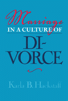

<body bgcolor="#FFFFFF" text="#000000" link="#0000FF" vlink="#CC0000" alink="#CC0000"><center><hr width="350" size="1" align="center" noshade>The experience of married life in different eras<hr width="350" size="1" align="center" noshade><p><a href="https://cdcshoppingcart.uchicago.edu/Cart/ChicagoBook.aspx?ISBN=9781566397247&&PRESS=temple" target="_top">Buy this book!</a> | <a href="https://cdcshoppingcart.uchicago.edu/Cart/Cart.aspx?PRESS=temple" target="_top">View Cart</a> | <a href="https://cdcshoppingcart.uchicago.edu/Cart/Cart.aspx?PRESS=temple" target="_top">Check Out</a></p><p></p></center><!--none//--><h1>Marriage in a Culture of Divorce</h1>
<h3>Karla B. Hackstaff</h3>
<P>cloth 1-56639-724-3 $59.50, Dec 99, <FONT COLOR=#990033>Out of Print</FONT>
<br>paper 1-56639-725-1 $33.95, Dec 99, <FONT COLOR=#990033>Available</FONT>
<br>Electronic Book 1-43990-555-X $33.95 <FONT COLOR=#990033>Out of Print</FONT>
<BR> 292 pp
6x9
2&nbsp;tables 1&nbsp;figure
</P><BLOCKQUOTE><I>"This is a very important book.... Hackstaff has given us some brilliant insights into one of the most important social, psychological, and moral problems of our time."</I>
<BR>&#151<B>Eli Sagan</B>, author of <I>Freud, Women, and Morality: The Psychology of Good and Evil</I><I></I></BLOCKQUOTE>
<p>Today, when fifty percent of couples who marry eventually get divorced, it's clear that we have moved from a culture in which "marriage is forever" to one in which "marriage is contingent." In this book sociologist Karla Hackstaff investigates intact marriages to examine the impact of new expectations in a culture of divorce.
<p><i>Marriage in a Culture of Divorce</i> examines the shifting meanings of divorce and gender for two generations of middle-class, married couples. Hackstaff finds that new social and economic conditions both support and undermine the efforts of spouses to redefine the meaning of marriage in a culture of divorce. The definitions of marriage, divorce, and gender have changed for all, but more so for the young than the old, and more for women than for men. While a portion of spouses in both generations believe that marriage is for life and that men should dominate in marriage, the younger generation of spouses increasingly construct marriage as a contingent rather than forever.
<p>Hackstaff presents this evidence in archival case studies of couples married in the 1950s, which she then contrasts with her own case studies of people married during the 1970s, and she discovers there is evidence of a significant shift in who does the emotional work of maintaining the relationship. It is primarily the woman in the '50s couples who "monitors" the marriage, while in the '70s couples, both husband and wife engage in a "marital work ethic," including couples therapy in some cases.
<p>The words and actions of the couples Hackstaff follows in depth&#151the '50's Stones, Dominicks, Hamptons, and McIntyres, and the '70's Turners, Clement-Leonettis, Greens, Kason-Morrises, and Nakatos&#151reveal the changes and contradictory tendencies of married life in the U.S. There are traditional relationships characterized by male dominance, there are couples striving for gender equality, there are partners pulling together, and partners pulling apart.
<p>Those debating "family values" should not forget, Hackstaff contends, that there are costs associated with marriage culture as well as divorce culture, and they should view divorce as a transitional means for defining marriage in an egalitarian direction. She convincingly illustrates her controversial position, that although divorce has its cost to society, the divorce culture empowers wives and challenges the legacy of male dominance that previously set the conditions for marriage endurance.
<BR>&nbsp;<h2>Excerpt</h2><P>Excerpt available at <a href="http://www.temple.edu/tempress">www.temple.edu/tempress</a></p>
<BR>&nbsp;<h2>Reviews</h2>
<P><I>"How do men and women feel about marriage in a culture of divorce? In this brilliant book, Hackstaff gets down to the key details in which culture, attachment, and power interact. This book makes giant strides in our understanding of marriage in the modern day."</I>
<BR>&#151<B>Arlie Russell Hochschild</B>, author of <I>The Time Bind: When Work Becomes Home and Home Becomes Work</I>
<P><I>"Karla Hackstaff shows that the truth about American marriage is far more complex&#151and hopeful&#151than the divorce alarmists would have it."</I>
<BR>&#151<B>Arlene Skolnick</B>, author of <I>Embattled Paradise: The American Family in an Age of Uncertainty</I>
<P><I>"In this timely work, Karla Hackstaff adds richly to the contemporary discussions about the future of marriage and, by extension, the futures of the family and constructs of gender."</I>
<BR>&#151<B>Terry Arendell</B>, Professor, Colby College, and author of <I>Mothers and Divorce</I> and <I>Fathers and Divorce</I>
<p><i>"It is not possible in this review to do justice to the richness of Hackstaff's interview data, the nuanced quality of her analysis and the breadth of her knowledge. Every page of this book is worth studying."</i>
<br>&#151<b><i>The Women's Review of Books</i></b>
<p>Read a <a href="../authors/1407_review.pdf">review</a> from <I>Contemporary Sociology</I>, Volume 30.6 (November 2001), written by Demie Kurz (pdf).
<BR>&nbsp;<h2>Contents</h2><P>
<p>Acknowledgments
<br>Introduction: Watershed in the Meaning of Marriage
<br>1. Marriage and the Construction of Ideology: From Marriage Culture to Divorce Culture
<br>2. The Shifting Grounds for Divorce: Structural and Cultural Conditions for Change
<br>3. The Push of Marriage Culture Among '50s Spouses
<br>4. The '50s Dominicks: Dominating with Divorce Culture
<br>5. The '50s Hamptons and Other Couples: Redefining Marriage Culture in Terms of Gender Equality
<br>6. '50s Spouses Secure Equal Footing in Divorce Culture
<br>7. The '50s Era in Rearview Mirror
<br>8. The Pull of Divorce Culture: Divorce Anxiety Among '70s Spouses
<br>9. '70s Couples Aim for Relational Equality
<br>10. The '70s Greens: Traditionalism in the 1990s
<br>11. "Topsy-Turvy" Mariages Among '70s Spouses
<br>12. Divorce Culture: A Quest for Relational Equality in Marriage
<br>Appendix: Methodological Notes
<br>Notes
<br>Bibliography
<br>Index
</P><BR>&nbsp;<H2>About the Author(s)</H2>
<P><B>Karla B. Hackstaff</B> is Assistant Professor of Sociology at Northern Arizona University in Flagstaff.</P>
<BR><H2>Subject Categories</H2>
<p><A HREF="/tempress/women.html" TARGET="_top">Women's Studies</a>
<BR><A HREF="/tempress/sociology.html" TARGET="_top">Sociology</a>
<BR><A HREF="/tempress/gender.html" TARGET="_top">Gender Studies</a>
</p>
<BR><h2 class="inpageheading">In the series</H2>
<P><I><a href="http://www.temple.edu/tempress/women_political.html" onMouseOver="window.status='Click for other books in this series!'; return true;" onMouseOut="window.status=''; return true;" target="_top">Women in the Political Economy</a></i>, edited by Ronnie J. Steinberg.
</p><p>No longer active.<p><i>Women in the Political Economy</i>, edited by Ronnie J. Steinberg, includes books on women and issues of work, family, social movements, politics, feminism, and empowerment. It emphasizes women's roles in society and the social construction of gender and also explores current policy issues like comparable worth, international development, job training, and parental leave.</p>
<p align="center"><a href="https://cdcshoppingcart.uchicago.edu/Cart/ChicagoBook.aspx?ISBN=9781566397247&&PRESS=temple" target="_top">Buy this book!</a> | <a href="https://cdcshoppingcart.uchicago.edu/Cart/Cart.aspx?PRESS=temple" target="_top">View Cart</a> | <a href="https://cdcshoppingcart.uchicago.edu/Cart/Cart.aspx?PRESS=temple" target="_top">Check Out</a></p><p><font face="Arial" size="1"><a href="copyright.html" onMouseOver="window.status='Web Copyright Policy';return true;" onMouseOut="window.status=''" title="Web Copyright Policy">&copy;</a> 2015 <a href="http://www.temple.edu" target="new" onMouseOver="window.status='Link to Temple University home page';return true;" onMouseOut="window.status=''" title="Link to Temple University home page">Temple University</a>. All Rights Reserved. http://www.temple.edu/tempress/titles/1407_reg.html</font></p>